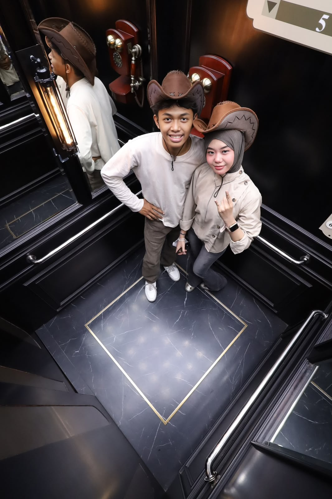
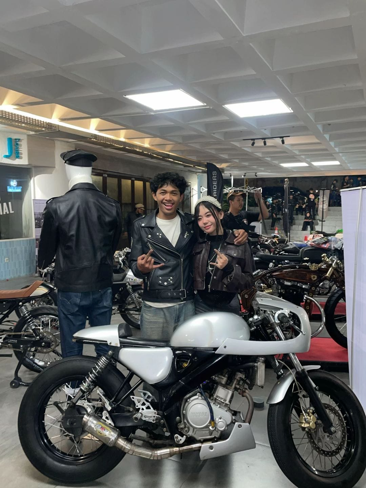
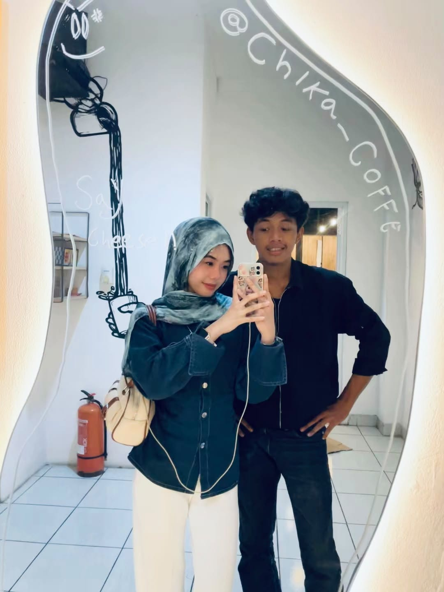

🔍 Perbesar
"Di antara banyaknya hari yang pernah berlalu, ada beberapa momen sederhana bersamamu yang selalu ingin aku kenang."
Di antara setiap langkah dan hari yang kita lalui bersama, selalu ada detik-detik berharga yang membekas manis di dalam ingatanku.

"Di antara banyaknya hari yang pernah berlalu, ada beberapa momen sederhana bersamamu yang selalu ingin aku kenang."

"Barangkali waktu tidak bisa diulang, tetapi setiap kenangan bersamamu akan selalu punya tempat tersendiri di hatiku."

"Aku tidak tahu bagaimana hari-hari kita selanjutnya, tetapi aku tahu bahwa setiap kebahagiaan yang pernah kita bagi adalah sesuatu yang sangat berarti."